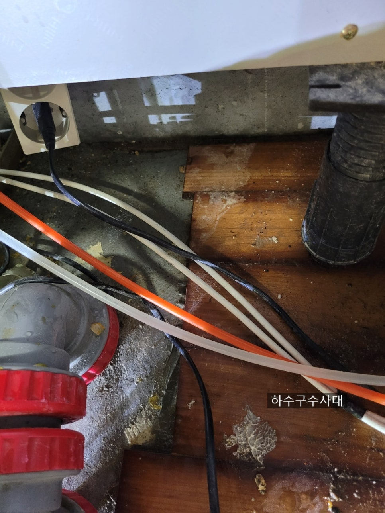
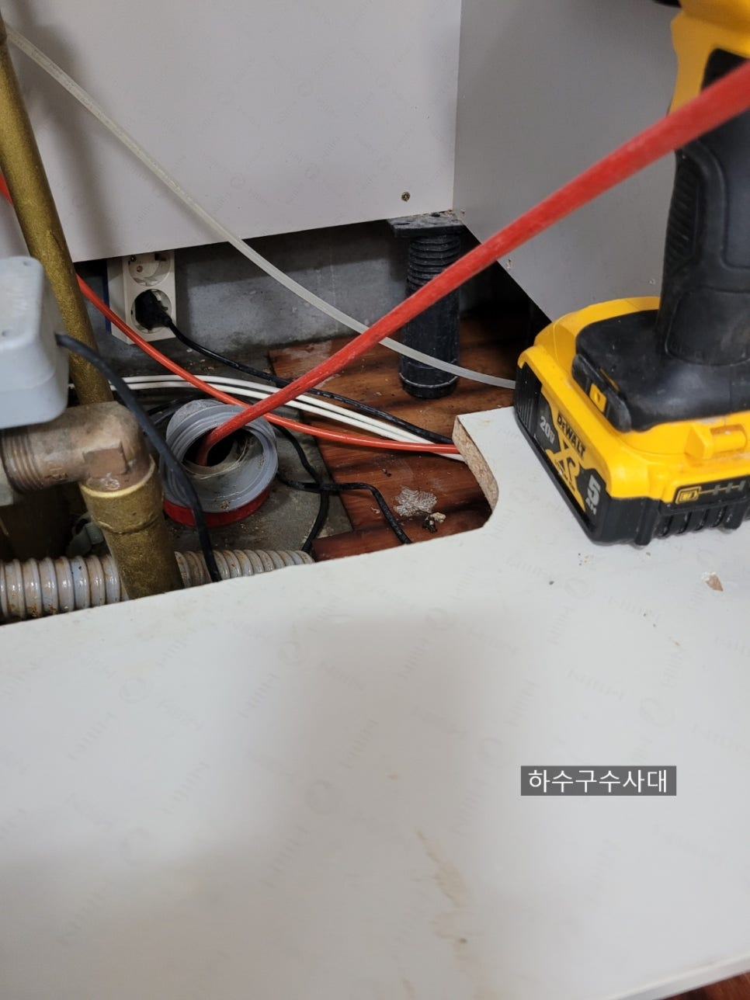
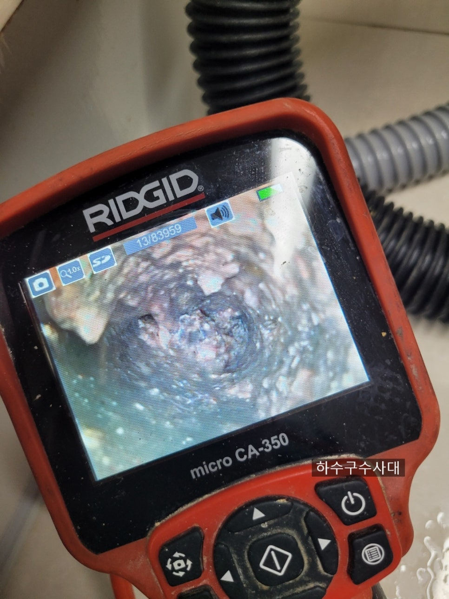
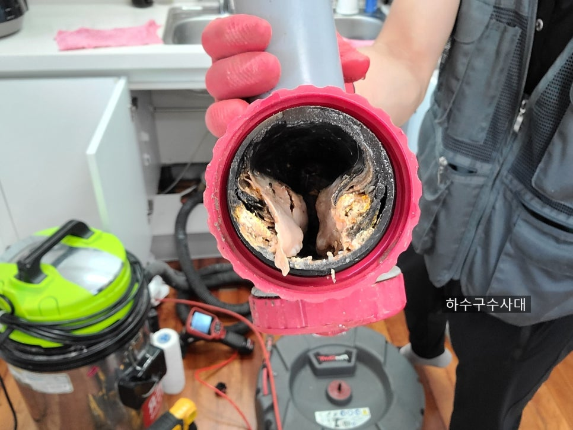
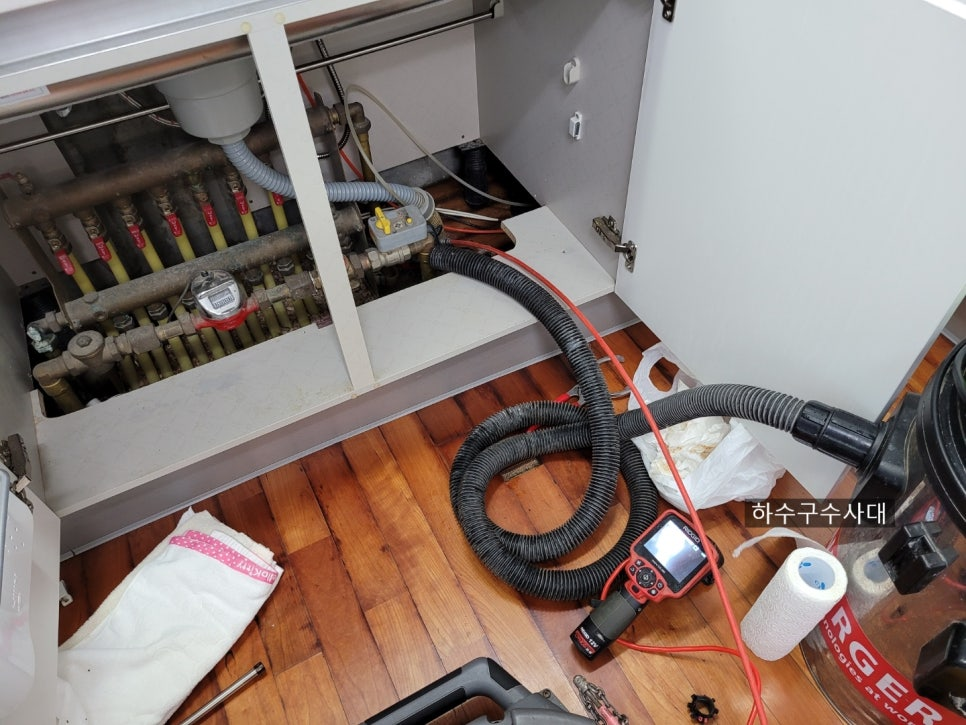
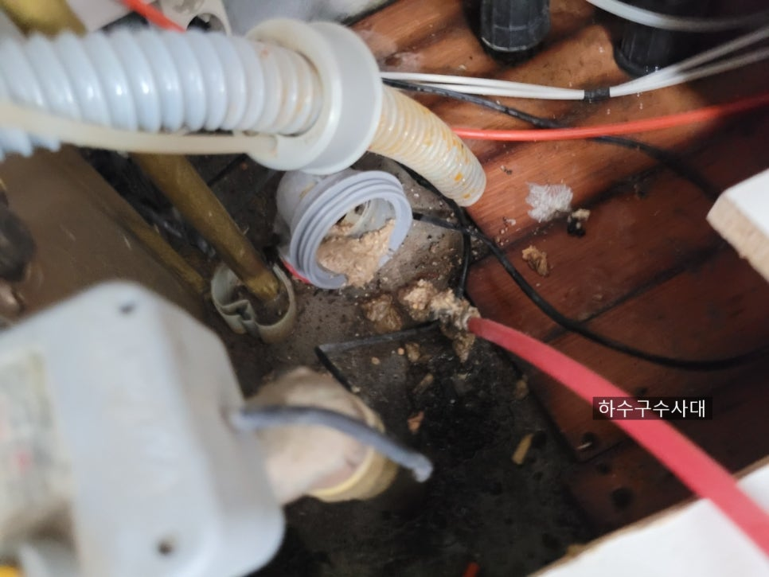
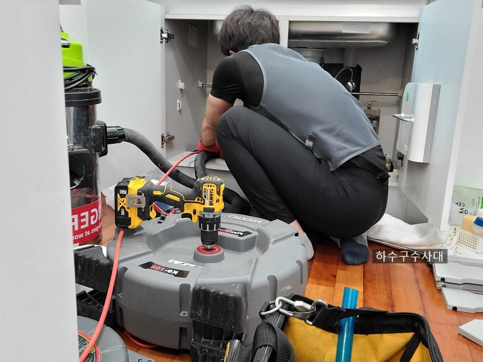

🏠 싱크대막힘 뚫음 하수구막힘 해결
서울 싱크대막힘 전문 시공 후기

📋 작업 개요
- 위치: 서울
- 서비스 유형: 싱크대막힘, 하수구막힘, 배관막힘, 누수수리, 역류해결, 뚫는업체, 배관청소, 고압세척
- 작업 일시: 2021. 7. 22. 22:35
- 업체명: 하수구수사대 (010-5615-2118)
🔍 문제 상황
연이은 폭염으로 일하기 참 힘든 나날입니다.
조금만 움직여도 땀범벅이지
모두들 건강에 유의하시길 바랍니다.
아파트 싱크대막힘 현장을 다녀왔습니다.
고객님의 집은
새로 이사오면서 리모델링을 새롭게 하셔서
외관은 깨끗하지만 싱크대 배관이 말썽이였답니다.
한달전 업체를 불러서 뚫었는데
한달만에 또 역류를 했다네요.
도착했을때는 이미 바닥으로 역류해
바닥이 흥건히 젖어 있었습니다.
고객님 입장에서는 한달전에 뚫었는데
또 넘치니 너무 억울할수 밖에 없습니다.
한달전 작업내용을 들어보니 깨끗히 배관을
세척하기보단 임시방편으로 뚫고만 간것으로
판단이 되었습니다.
우선 내시경촬영을 해보았습니다.
내시경촬영
배관내부를 보니 기름이 거의 꽉막고

🔎 원인 분석
💡 전문가 진단: 하수구수사대010-2340-2118
있는데 작업을 도대체 어떻게 한건지 ㅜㅜ
슬러지
입구쪽에는 슬러지가 마중나와 있습니다.
이정도면 엄청 심각한데
밑에집에 누수가 되지 않은게
천만다행입니다.
"싱크대막힘 뚫음 하수구막힘 해결"
싱크대배관이 막히면 내시경촬영은 필수이며
되도록 배관청소를 하시는게
좋습니다.
아파트 싱크대막힘은 기본적인 장비로
해결되면 좋겠지만 그렇지 않은 경우가
더많습니다.
관리를 하면서 사용했다면 모르겠지만
새로 이사들어간곳에서 싱크대배관에서
말썽이 생기면 정확하게 진단을 받아보시는게
기름슬러지
보통막히면 펑크린,뚜러펑 같은
배관세정제를 넣으시는데
이미 딱딱하고 두껍게 기름덩어리가

🔧 작업 과정
붙어있는 배관에는 소용이 없습니다.
앞부분에서 떨어져 덩어리가
뒤쪽에 가서 막히는경우가 많습니다.
배관세척
그리고 요즘 아파트에 음식물분쇄기가
설치되어 있는곳이 종종있는데
음식물분쇄기는 생활에 편리함을 주기도 하지만
음식을 갈아서 내보내기때문에 배관에
악영향을 미치는 경우가 많습니다.
예를들면 갈아낸 음실물 찌꺼기들을
물을 충분히 흘려 배관에 남아있지않아야
하는데 오히려 찌꺼기들이 배관에 남아
더 많이 붙는 경우가 많습니다.
되도록이면 음실물분쇄기는 쓰지않는게
좋다고 생각하는 1인입니다.
반복된 작업으로 석션과 세척작업을 통해
깨끗하게 배관내 이물질을 제거합니다.
세척완료
세척이 완료된 사진입니다.
하수구수사대는 작업 전과 후 내시경검수를
모두 고객님과 공유하기때문에
믿을수 있는업체입니다.
1년as는 물론 관리방법까지 알려드리기 때문에
평생 막힐일이 없습니다^^
마지막으로 물을 흘려보내며
배수의 흐름까지 확인하고
고객님이 바로 사용하실수 있도록
테스트를 합니다.
가끔 마무리가 되지않아 호스에서 물이
새거나 호스를 배관에 연결하지 않아
물바다가 되는 웃픈 일이 생길수 있기때문에


✅ 작업 완료
마지막배수테스트는 필수입니다^^
하수구수사대는 서울/경기/인천
1시간내 방문할수 있는 인프라를
구축하였습니다.
하수구수사대
010-2340-2118
막혔을땐 하수구수사대
빠르게 불러주세요^^




⚠️ 베란다 누수 및 방수 관리 방법
- ✅ 비가 많이 올 때 창틀 주변이나 아래층 천장에 얼룩이 생기는지 정기적으로 확인해 보세요.
- ✅ 우수관 주변 실리콘 마감이 들뜨거나 깨진 틈새가 있는지 손상 여부를 수시로 체크하세요.
- ✅ 베란다 바닥 타일의 줄눈(메지)이 소실되면 그 틈으로 물이 침투하여 누수가 유발됩니다.
- ✅ 누수 의심 증상 발견 시 방치하면 아래층 손실이 커지므로 즉시 전문가의 진단을 받으십시오.
💡 핵심 정리
- 확실한 장비 작업(내시경 점검 및 샤프트 스케일링)으로 원인을 뿌리 뽑습니다.
- 작업 후 1년 이내에 동일한 부위 재발 시 100% 무상 A/S 서비스를 보장합니다.
- 서울 · 경기 · 인천 전 지역에 24시간 언제든 긴급 출동할 수 있도록 항시 대기 중입니다.
❓ 자주 묻는 질문 (FAQ)
🚨 서울 싱크대막힘 문제로 고민이신가요?
정확한 원인 진단과 확실한 시공으로 재발 없는 해결을 약속드립니다.
24시간 긴급 출동 | 서울 · 경기 · 인천 전지역 | 1년 내 재발 시 무상 A/S